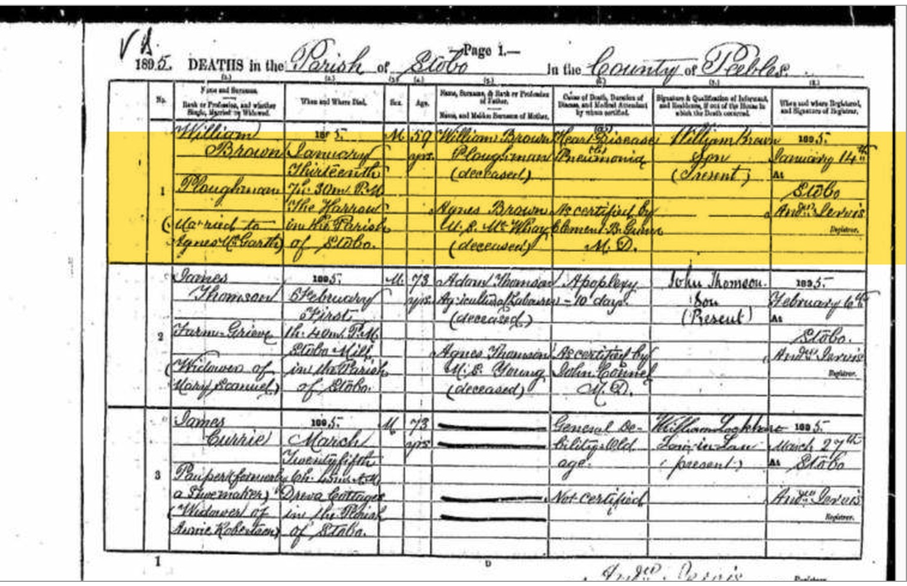

Item 8 · January 13, 1895
Death registration: William Brown
The document

This copy carries yellow highlighting or red outlining added for the book site. It is not on the original.
Tap an image to open it full size.
Transcription, word for word
Everything as written, including misspellings. [?] marks an uncertain reading. Struck-through words are marked as struck through. Notes in square brackets describe the page and are not part of it.
—Page 1.— [Top left, handwritten] VA 1895. DEATHS in the Parish of Stobo in the County of Peebles. [Column headings, printed, as on all Scottish death registers] No. 1 Name: William Brown Ploughman (Married to Agnes McGarth) Died: 1895. January Thirteenth 7h. 30m. P.M. The Harrow in the Parish of Stobo. Sex: M. Age: 59 yrs. Father/Mother: William Brown Ploughman (deceased). Agnes Brown M.S. McWhay[?] (deceased) Cause: Heart Disease. Pneumonia. As certified by Clement B. Gunn M.D. Informant: William Brown Son (Present) Registered: 1895. January 14th At Stobo Andw Jervis Registrar. No. 2 Name: James Thomson Farm Grieve (Widower of Mary Samuel) Died: 1895. February First 1h. 40m. P.M. Stobo Mill in the Parish of Stobo. Sex: M. Age: 73 yrs. Father/Mother: Adam Thomson Agricultural Labourer (deceased). Agnes Thomson M.S. Young (deceased) Cause: Apoplexy – 10 days. As certified by John Connel M.D. Informant: John Thomson Son (Present) Registered: 1895. February 6th At Stobo Andw Jervis Registrar. No. 3 Name: James Currie Pauper formerly a Shoemaker (Widower of Annie Robertson) Died: 1895. March Twentyfifth 10h. 15m. A.M. Dreva Cottage in the Parish of Stobo. Sex: M. Age: 73 yrs. Father/Mother: [lines drawn, no entry] Cause: General debility. Old age. Not Certified Informant: William Laghtane[?] Son-in-Law (present) Registered: 1895. March 27th At Stobo Andw Jervis Registrar. [Signature, cut off at the bottom] Andw Jervis Registrar.